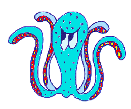
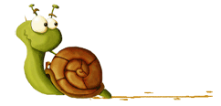

MOLUSCOS
Los moluscos conforman uno de los grandes filos del reino animal. Son invertebrados protóstomos celomados, triblásticos de simetría bilateral no segmentados, de cuerpo blando, desnudo o protegido por una concha

